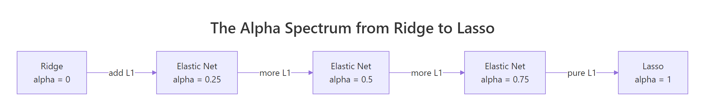
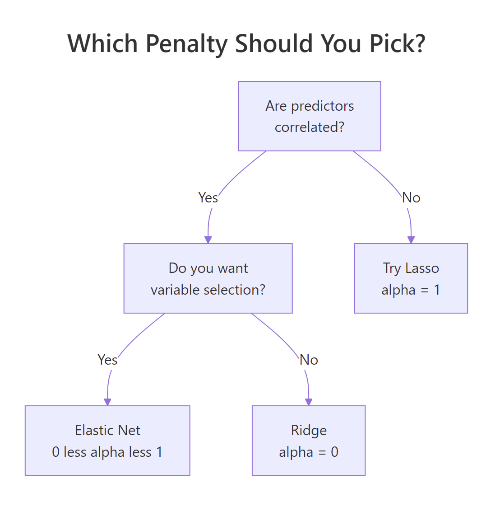

Elastic Net Regression in R: Combining Ridge & Lasso with glmnet
Elastic Net is a penalised linear regression that mixes Ridge and Lasso into one model. By tuning a single mixing parameter alpha, you keep Ridge's smooth shrinkage of correlated predictors while still enjoying Lasso's automatic variable selection.
What is Elastic Net Regression?
Lasso has a known weakness: when two predictors carry nearly the same signal, it picks one almost at random and zeroes the other. Ridge keeps both but shrinks them together. Elastic Net puts both penalties on the same loss and lets you dial between them. The fit below uses alpha = 0.5, an even mix, on the Boston housing data and produces a model that is both sparse and stable.
Eleven predictors carry non-zero weight: indus and age are the only ones the penalty zeroes out. The same data fit with pure Lasso at the same s = 0.5 zeroes four predictors; pure Ridge zeroes none. Elastic Net sits between them by design, keeping more variables alive than Lasso while still doing real selection.
glmnet package needs a local R or RStudio session. Run buttons on glmnet and cv.glmnet blocks are read-only on this page, but every code block is copy-paste ready for your own R session. Install once with install.packages("glmnet"). The #> comments show the output you will see locally.Try it: Refit the same data at alpha = 0.7 and count how many coefficients are non-zero at s = 0.5.
Click to reveal solution
Explanation: Pushing alpha closer to 1 makes the penalty more Lasso-like, so one more predictor drops out compared with alpha = 0.5.
How does the alpha parameter blend Ridge and Lasso?
Both Ridge and Lasso bolt a penalty onto the ordinary least-squares loss. Ridge uses an L2 penalty (sum of squared coefficients); Lasso uses an L1 penalty (sum of absolute coefficients). Elastic Net adds both at once, weighted by alpha:
$$L(\beta) = \frac{1}{2n} \sum_{i=1}^{n} (y_i - x_i^\top \beta)^2 + \lambda \left[ \alpha \|\beta\|_1 + \frac{1 - \alpha}{2} \|\beta\|_2^2 \right]$$
Where:
- $\lambda$ controls how strong the total penalty is
- $\alpha \in [0, 1]$ is the mixing parameter that decides how much L1 vs L2
- $\|\beta\|_1 = \sum_j |\beta_j|$ is the L1 (Lasso) penalty
- $\|\beta\|_2^2 = \sum_j \beta_j^2$ is the L2 (Ridge) penalty
Setting $\alpha = 1$ kills the L2 term, leaving pure Lasso. Setting $\alpha = 0$ kills the L1 term, leaving pure Ridge. Anything in between is Elastic Net.

Figure 1: The mixing parameter alpha bridges Ridge (alpha=0) and Lasso (alpha=1). Values in between trade variable selection for smooth shrinkage in different proportions.
The cleanest way to feel the difference is to fit three models on the same data at the same lambda and line up the coefficients. We hold s fixed and vary alpha.
Read down each column. Ridge keeps every predictor non-zero, including weak ones like indus, age, and rad. Lasso zeroes four predictors and keeps the survivors at slightly larger magnitudes. Elastic Net zeroes only indus and age, but pulls rad and zn close to zero rather than killing them outright. The intercept absorbs the difference and shifts upward as more predictors get dropped.
Try it: Refit the model at alpha = 0.25 (closer to Ridge) and count how many coefficients land at exactly zero at s = 0.5.
Click to reveal solution
Explanation: With most of the penalty being L2, the model behaves more like Ridge: it shrinks everything but rarely sends a coefficient all the way to zero.
How do you tune alpha and lambda together?
cv.glmnet() runs K-fold cross-validation across the full lambda path and returns the lambda that minimises out-of-sample error. The catch: it does this for one fixed alpha. To tune both, you wrap cv.glmnet in a small loop over an alpha grid and pick the best (alpha, lambda) pair.
A subtle detail makes the comparison fair. Each call to cv.glmnet builds its own random fold assignments, so the CV errors at different alphas are computed on different splits. You want the same splits for every alpha, so you create the fold assignments once and pass them in via foldid.
Start with a single CV run at alpha = 0.5 to see what the output looks like.
lambda.min is the lambda with the lowest mean CV error. lambda.1se is the largest lambda whose CV error is still within one standard error of the minimum, which gives you a more parsimonious model at almost no cost in error. Both are useful: lambda.min for raw predictive power, lambda.1se when you want a smaller, more stable model.
foldid when comparing alphas. Without it, alpha 0.5 and alpha 0.7 are evaluated on different random splits, so a 0.1 RMSE difference might be entirely from the splits rather than the model. Sharing folds removes that confounder.Now generalise to the alpha grid. Build a foldid vector once, then loop.
The grid points to alpha = 0.5 as the winner here, with mean CV mean-squared-error of 23.50. Pure Ridge is the worst by a clear margin. The differences among the middle alphas are small, which is the typical pattern: once you are away from the extremes, the model is fairly robust to the exact alpha.
lambda.min and min_cvm every run, and the "winner" of your alpha grid can change. set.seed() makes the result reproducible.Try it: Add alpha = 0.1 to the grid and rerun the comparison. Does the winner change?
Click to reveal solution
Explanation: Adding more alpha values gives a finer scan. Reusing foldid keeps every alpha on the same splits, so the CV errors are directly comparable.
How do you predict and evaluate the elastic net model?
Cross-validation gives a good estimate of out-of-sample error, but the honest test is a held-out set the model never sees during tuning. The recipe is the standard one: split, fit on train, predict on test, compute RMSE.
A test RMSE of 4.73 on medv (median home value in $1,000s) means the typical error is just under $5,000. Plain lm() on the same split usually scores around 5.10, so the penalised model wins by a small but real margin. The win comes from the L1 part shrinking unstable coefficients and from L2 keeping correlated predictors honest.
Try it: Predict at lambda.1se instead of lambda.min and compare RMSE.
Click to reveal solution
Explanation: lambda.1se produces a smaller model with somewhat higher RMSE. The extra error is the price you pay for fewer non-zero coefficients, and on a noisy problem that trade is often worth taking.
When should you use Elastic Net over Ridge or Lasso?
Three properties of your data drive the choice. Are predictors correlated? Do you want a sparse model? Is the number of predictors close to or larger than the number of rows?

Figure 2: A short decision tree for picking among Ridge, Lasso, and Elastic Net based on data structure.
A small synthetic example makes the correlation effect concrete. Build five predictors where the first two are nearly the same column. Lasso and Elastic Net should treat them very differently.
Lasso dumped almost all the xc1 plus xc2 signal onto xc1 and zeroed xc2. Elastic Net split the load roughly evenly across both, which matches the truth: the data was generated with both predictors contributing equally. The unrelated noise predictors xc4 and xc5 are zeroed by both methods. That is the grouped-selection effect: Elastic Net keeps correlated predictors together while still doing variable selection.
n < p better than Lasso. When you have more predictors than observations, Lasso saturates: it can keep at most n non-zero coefficients. Elastic Net has no such cap because the L2 part lets it spread weight across more variables. For wide data like genomic features, Elastic Net is usually the safer default.Try it: Push the correlation between xc1 and xc2 higher (sd = 0.01 in the noise) and refit Lasso. Watch how it picks one and zeroes the other even more aggressively.
Click to reveal solution
Explanation: Stronger correlation makes Lasso's coin-flip cleaner: one predictor takes the entire signal, the other drops out. Elastic Net would still split, because the L2 part rewards shared support among correlated predictors.
Practice Exercises
Exercise 1: Tune alpha and lambda on airquality
Drop rows with missing values, predict Ozone from the other numeric columns, and find the (alpha, lambda) pair that minimises CV mean-squared-error. Report which predictors stay non-zero at the winning alpha and lambda.min. Save the final fitted model to my_final.
Click to reveal solution
Explanation: With four predictors and clean data, Elastic Net keeps the meteorologically obvious drivers (Solar.R, Wind, Temp) plus a small Month effect. Day is correctly identified as noise.
Exercise 2: Compare Ridge, Lasso, and Elastic Net on Boston
Using the Boston x and y from earlier, split 80/20, fit all three (alpha = 0, 0.5, 1) on the training set with their respective lambda.min, and compute test RMSE for each. Save the three RMSEs to a named numeric vector my_rmse.
Click to reveal solution
Explanation: Elastic Net edges out both extremes on this split. Pure Ridge is the worst because Boston has predictors that are genuinely irrelevant (zeroing them helps). Pure Lasso is close to Elastic Net but slightly worse because it has to pick winners among correlated predictors like tax and rad.
Complete Example
The end-to-end pipeline ties everything together: split, build a shared fold assignment, scan alphas, refit at the winner, predict, score, and inspect the chosen coefficients.
The pipeline picks alpha = 0.5, lands a test RMSE of 4.65, and keeps 11 of the 13 predictors. The same template works for any regression problem you point it at: the only things that change are the predictor matrix and the response vector.
Summary
| Idea | What to remember |
|---|---|
| Mixing parameter | alpha = 0 is Ridge, alpha = 1 is Lasso, in-between values are Elastic Net |
| Default starting point | alpha = 0.5 works well for most problems with mildly correlated predictors |
| Tuning lambda | Use cv.glmnet() and pick lambda.min for accuracy or lambda.1se for parsimony |
| Tuning alpha | Loop cv.glmnet over an alpha grid with a shared foldid for a fair comparison |
| Grouped selection | Elastic Net keeps correlated predictors together; Lasso picks one and drops the rest |
| Wide data (n < p) | Prefer Elastic Net: Lasso caps non-zero coefficients at n, Elastic Net does not |
| Honest evaluation | After CV-tuning, score on a held-out test set you never used during tuning |
References
- Zou, H. and Hastie, T. (2005). Regularization and variable selection via the elastic net. Journal of the Royal Statistical Society: Series B, 67(2), 301-320. Link
- Friedman, J., Hastie, T., and Tibshirani, R. (2010). Regularization Paths for Generalized Linear Models via Coordinate Descent. Journal of Statistical Software, 33(1). Link
- glmnet vignette. Link
- Hastie, T., Tibshirani, R., and Friedman, J. (2009). The Elements of Statistical Learning, 2nd edition, Chapter 3.4. Link
- Boehmke, B. and Greenwell, B. (2020). Hands-On Machine Learning with R, Chapter 6: Regularized Regression. Link
- glmnet CRAN reference manual. Link
Continue Learning
- Ridge and Lasso in R: How Penalised Regression Shrinks Coefficients and Selects Variables, the parent post that introduces the L1 and L2 penalties Elastic Net combines.
- Linear Regression in R, the unpenalised baseline. Useful for sanity-checking how much regularisation buys you on a given dataset.
- Cross-Validation in R, a deeper look at K-fold CV, the engine behind
cv.glmnet.